1. Ogólne
Aby zainstalować nowy interfejs oraz filmy wyświetlane przy zgłoszeniach przenieś zawartość folderu _Interfejs Interface do folderu Data znajdującego się w głównym folderze Emergency 4. Folder _Interfejs Interface znajduje się w folderze z modem.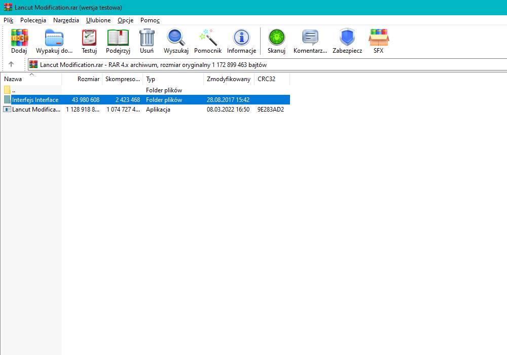
Zalecany poziom trudności gry - średni.
Aby zaalarmować JRG musimy zaznaczyć dyspozytora.
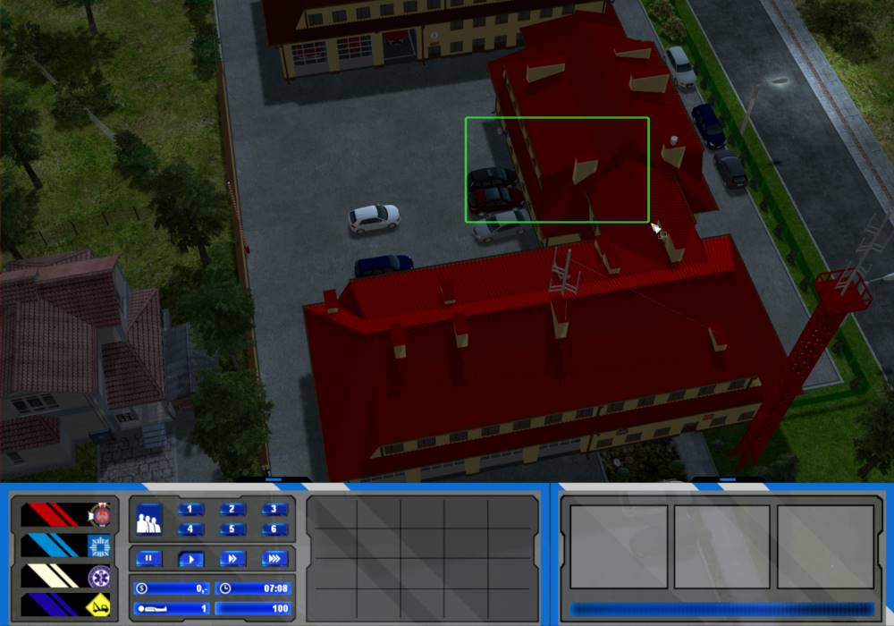
Aby zadysponować interesujące nas zastępy, wybieramy ich ikony, a następnie klikamy dzwonek.
1. Odesłanie strażaków do koszar
2. Otworzenie/zamknięcie dachu
3. Włączenie/wyłączenie świateł
4. Reset ruchu drogowego (w przypadku zbugowania)
5. Reset dźwięków (w przypadku zbugowania)
6. Przywrócenie komend pojazdu/postaci (w przypadku zbugowania, należy trzymać lewy shift i kliknąć na pojazd/postać)

1. Włączenie/wyłączenie silnika (aby móc włączyć silnik, a także poruszać pojazdem, w samochodzie musi znajdować się jakaś osoba)
2. Oświetlenie robocze
3. Ubranie strażaków w AODO
4. Ubranie strażaka w kamizelkę KDR
5. Zamykanie skrytek
6. Parkowanie pojazdu w wybranym miejscu
7. Sprawdzenie poziomu wody w zbiorniku
8. Maszt oświetleniowy
9. Fala świetlna

1. Tablica ostrzegawcza
2. Patrolowanie mapy
Aby zaalarmować Zespół Ratownictwa Medycznego zaznaczamy stojącą na mapie karetkę, a następnie klikamy w dzwonek (1). Zespół R01 06 można zaalarmować tylko w godzinach 7-23.
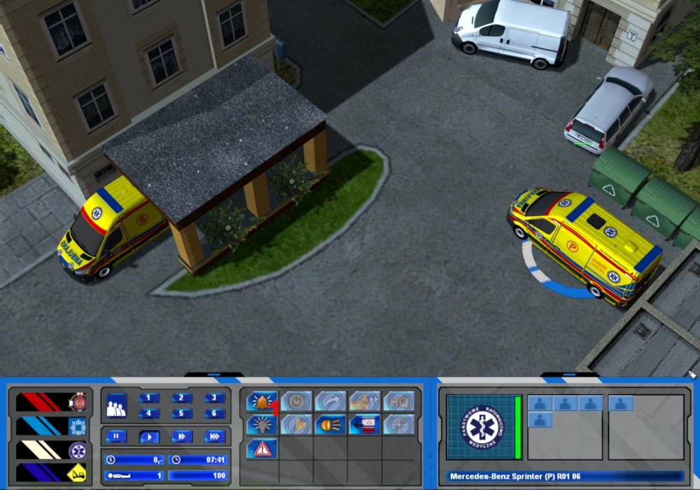
Przy alarmowaniu jednostek spoza mapy należy wybrać cel dojazdu, gdy wyświetli się informacja. Aby uniknąć klikania na mapę dwukrotnie, najlepiej przy alarmowaniu korzystać z ikony po lewej.

Komenda parkowania pojazdu pozwala na wybranie miejsca, w którym chcemy, żeby pojazd się znalazł. Celem można obracać (1), a następnie należy kliknąć (2), żeby pojazd zaczął parkować. Przez czas wybierania celu sterowanie pojazdem będzie niemożliwe, akcję można anulować za pomocą (3).
Aby rozłożyć podnośnik, należy nacisnąć ikonę rozkładania (1). W pobliżu musi być dostępny wolny strażak (nie może trzymać żadnego sprzętu). W przypadku pojazdu PSP musi być to strażak PSP, w przypadku pojazdu OSP Markowa strażak OSP Markowa.
Jeżeli chcemy zainstalować podnośnik na budynek/drzewo, odpowiedni strażak musi znajdować się w pojeździe. Jeżeli cel będzie znajdować się za daleko, żeby podnośnik mógł się do niego zainstalować, po rozłożeniu wyświetlony zostanie komunikat. Żeby złożyć podnośnik należy najpierw opuścić kosz.
W przypadku zgonu należy zabrać zwłoki zakładem pogrzebowym.
2. Wyposażenie
1. Stojak hydrantowy2. Rozdzielacz
3. Wycior kominowy
4. Parawan
5. Nóż do szyb
6. Klocki stabilizacyjne
7. Pompa szlamowa
8. Skokochron (dostępny w podnośnikach oraz 491[R]90)
9. Położenie węża na ziemi celem podpięcia kolejnego
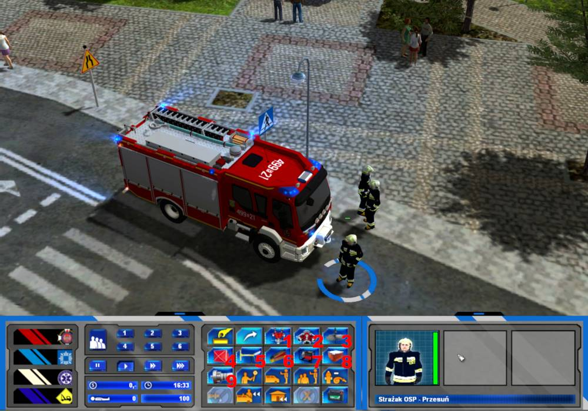
1. Wąż
2. Tłumica
3. Narzędzia hydrauliczne
4. Piła łańcuchowa
5. Halligan
6. Torba PSP-R1
7. Deska ortopedyczna
8. Sorbent
9. Miotła
10. Pachołek
1. Kombinezon gazoszczelny
2. Pompa beczkowa
3. Zbiornik
1. Torba medyczna
2. Defibrylator
3. Deska ortopedyczna
4. Nosze
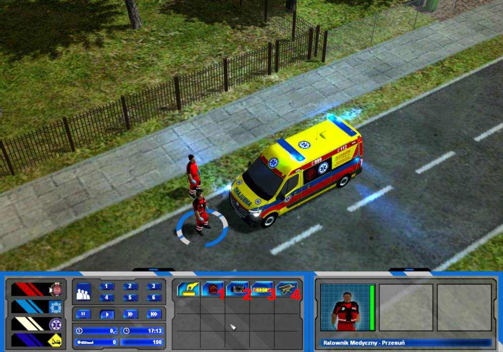
1. Pachołek
2. Torba medyczna

Aby odłożyć wyposażenie zaznaczamy postać i klikamy na pojazd. Jeżeli chcemy odłożyć wąż, musimy trzymać lewy shift.
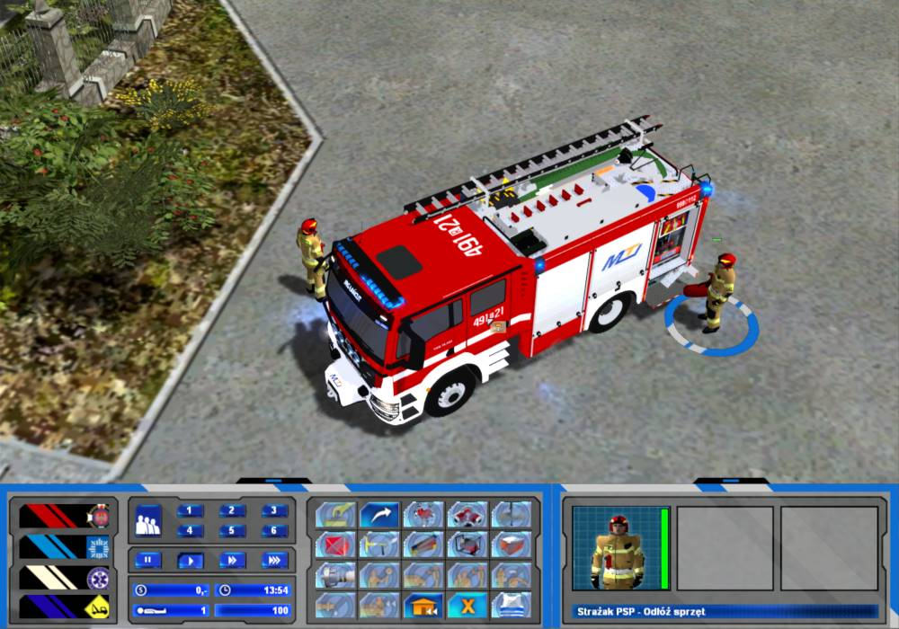
Skrytki w wozach otwierają się, gdy wyjmujemy z nich jakiś sprzęt. Aby je zamknąć zaznaczamy pojazd, a następnie klikamy na strażaka (postać musi stać bezczynnie i nie mieć przy sobie żadnego sprzętu).
Tak samo dzieje się w przypadku karetek. Aby zamknąć drzwi zaznaczamy karetkę, a następnie klikamy na ratownika.
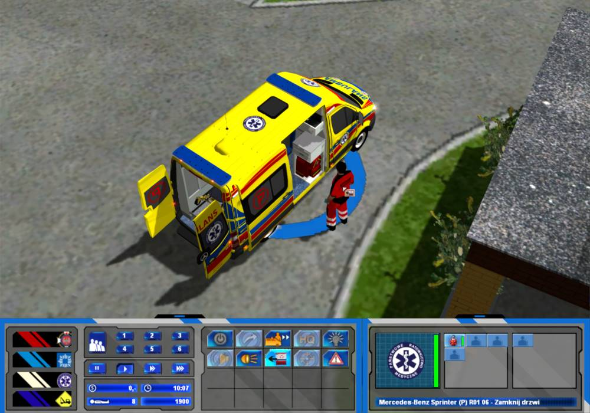
Sprzęt leżący na ziemi po zakończeniu akcji należy podnieść i schować do pojazdu.

Aby w ogóle móc gasić, musimy włączyć w samochodzie autopompę. Jeśli podłączyliśmy wąż do pojazdu, wybieramy wolnego strażaka i klikamy nim na wóz. Podejdzie on do skrytki z autopompą i ją uruchomi. Jeżeli odejdziemy strażakiem od pojazdu, autopompa automatycznie się wyłączy.
Aby ubrać lub zdjąć AODO, wybieramy strażaka, a następnie klikamy na wóz trzymając lewy shift. Automatycznie włączy się pobór powietrza z butli i pojawi nam się ikona poziomu powietrza. W momencie skończenia się powietrza w butli nie będzie można dalej gasić i powinniśmy wprowadzić kolejną rotę. Powietrze w butli schodzi co 20%.
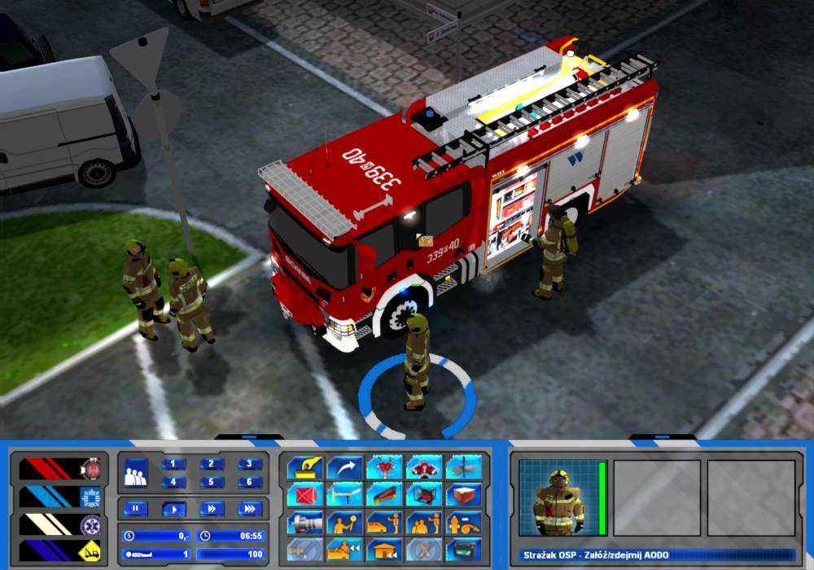
Powietrze w butli można również napełnić w samochodzie SPgaz.
Każdy samochód ma swój własny poziom wody w zbiorniku. Aby nie spadł do zera, musimy podłączyć zasilanie wodne. Możemy to zrobić z hydrantu, jeżeli jest w pobliżu. W tym celu podłączamy wąż do hydrantu i następnie do wozu. Następnie musimy wybrać strażaka i kliknąć na hydrant, żeby go odkręcić. Gdy chcemy odpiąć zasilający wąż od samochodu, musimy najpierw zakręcić hydrant. Robi się to w sposób analogiczny do odkręcania. Możemy również zrobić zasilanie z innego wozu gaśniczego. Wykonuje się to w taki sam sposób, jak przy użyciu hydrantu. Żeby zasilanie działało, należy włączyć autopompę w wozie zasilającym. Zasilania nie można rozbudowywać, jeżeli pojazd jest już zasilany, nie może on zasilać kolejnego pojazdu. Odpiąć wąż od samochodu można jedynie takim samym rodzajem strażaka, jakim się go podpięło (taki sam rodzaj ubrania specjalnego, strażak w AODO lub bez). Jeżeli więc nie możesz odpiąć węża, poszukaj strażaków w innych ubraniach specjalnych będących na miejscu zdarzenia. Upewnij się również, że hydrant został zakręcony.

Strażak w kamizelce KDR oraz oficer mają możliwość znajdowania hydrantów w pobliżu (1). Po użyciu komendy hydranty znajdujące się w pobliżu będą zaznaczone strzałką.
W modyfikacji dostępne są jedynie hydranty podziemne. Aby móc je użyć, należy zamontować stojak hydrantowy. Po zakończeniu akcji stojak można podnieść i schować do wozu.
Aby użyć rozdzielacza, należy go położyć na ziemi, a następnie podłączyć do niego wąż podłączony do wozu.
Po akcji należy odpiąć wąż od rozdzielacza, a sam rozdzielacz podnieść i schować do wozu. Odpiąć wąż od rozdzielacza można jedynie takim samym rodzajem strażaka, jakim się go podpięło (taki sam rodzaj ubrania specjalnego, strażak w AODO lub bez), tak samo jak w przypadku zasilania. To samo tyczy się również węża położonego na ziemi.
Aby móc udzielać pomocy poszkodowanym, postać musi trzymać torbę medyczną.
Po rozłożeniu parawanu można zmieniać jego ustawienie za pomocą komend.
Jeżeli chcemy gasić pianą, musimy wyposażyć strażaka w AODO. Następnie podpinamy wąż do wozu i wybieramy z ekwipunku wytwornicę pianową (1).
Aby podłączyć wąż do wozu, należy klikać na kabinę. W niektórych wozach podłączenie może być niemożliwe poprzez klikanie na zabudowę.
3. Misje
W ugaszonym samochodzie można odłączyć akumulator. W tym celu otwieramy najpierw maskę za pomocą halligana, a następnie odłączamy akumulator.
W przypadku wypadków drogowych możemy podłożyć klocki stabilizacyjne, wyciąć szyby za pomocą noża do szyb oraz otworzyć maskę za pomocą halligana i odłączyć akumulator.
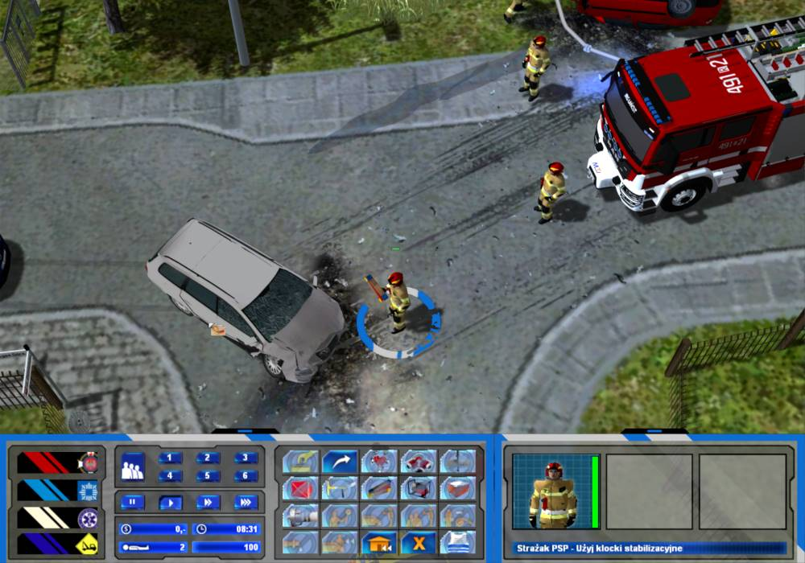
Jeżeli w pojeździe znajduje się zakleszczona osoba, możemy udzielić jej pomocy za pomocą ratownika medycznego lub lekarza do czasu wydobycia jej przez strażaków.
Na koniec należy usunąć plamy oleju oraz uprzątnąć szkło za pomocą sorbentu i miotły.
W przypadku wypadków oraz kolizji z udziałem ciężarówek możemy zadysponować zastęp SRChem i wypompować paliwo. W tym celu należy rozstawić zbiornik na samochodzie, a następnie użyć pompy beczkowej.
Następnie zbiornik należy zabrać lawetą.
W przypadku wypadków oraz kolizji z udziałem ciężarówek pojazd zabrać można za pomocą zastępu SCRd.
W przypadku kolizji należy otworzyć maskę pojazdu za pomocą halligana, odpiąć akumulator oraz usunąć plamy oleju i szkło za pomocą sorbentu i miotły.
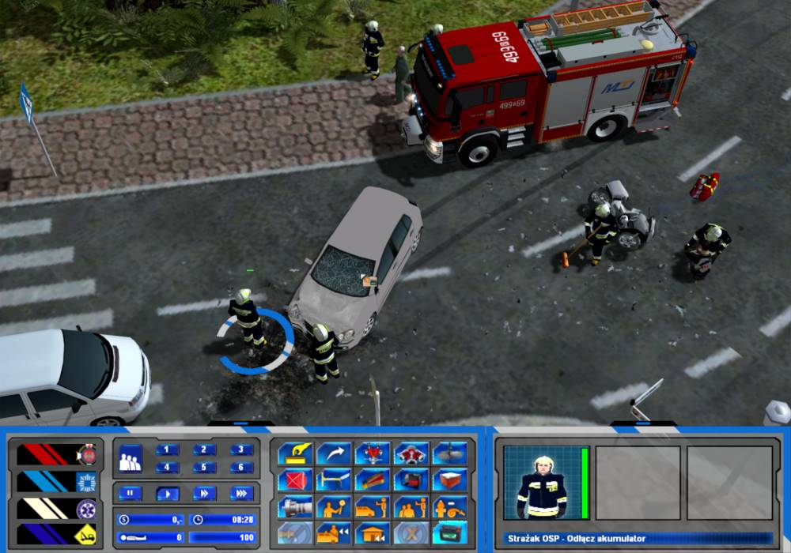
Jeżeli w kolizjach są osoby poszkodowane, należy udzielić im pomocy, a następnie zaprowadzić do karetki.
W przypadku ładunku rozsypanego na jezdnię należy uprzątnąć drogę. Skrzynki należy przenieść poza drogę, drzewo pociąć piłą łańcuchową, a resztki gałęzi oraz szkło posprzątać miotłą. Jeżeli jest wyciek oleju, należy zneutralizować go za pomocą sorbentu i miotły. Można również wypompować paliwo za pomocą zastępu SRChem, a ciężarówkę zabrać zastępem SCRd.
W przypadku pożaru sadzy należy rozstawić podnośnik na komin, wejść do kosza strażakiem wyposażonym w wycior kominowy i za jego pomocą ugasić pożar.
W przypadku zwisającej gałęzi należy rozstawić podnośnik na drzewo, a następnie strażakiem wyposażonym w piłę łańcuchową wejść do kosza i uciąć gałąź. Następnie leżącą na ziemi gałąź należy pociąć.
W przypadku zerwanego dachu należy odsunąć resztki blachy na bok, rozstawić podnośnik na budynek i za pomocą strażaka zabezpieczyć dach.
W przypadku podtopienia należy wypompować wodę za pomocą pompy szlamowej.

W przypadku powalonego drzewa należy pociąć drzewo za pomocą piły łańcuchowej, a następnie uprzątnąć resztki za pomocą miotły.
W przypadku włączonej czujki przeciwpożarowej, po upewnieniu się, że nie ma zagrożenia, należy ją wyłączyć za pomocą strażaka.
W przypadku wycieku niezidentyfikowanej substancji należy wezwać zastęp SRChem, rozstawić zbiornik, wypompować substancję za pomocą pompy beczkowej, a następnie zabrać zbiornik lawetą, tak jak w przypadku wypadków i kolizji z udziałem ciężarówek.

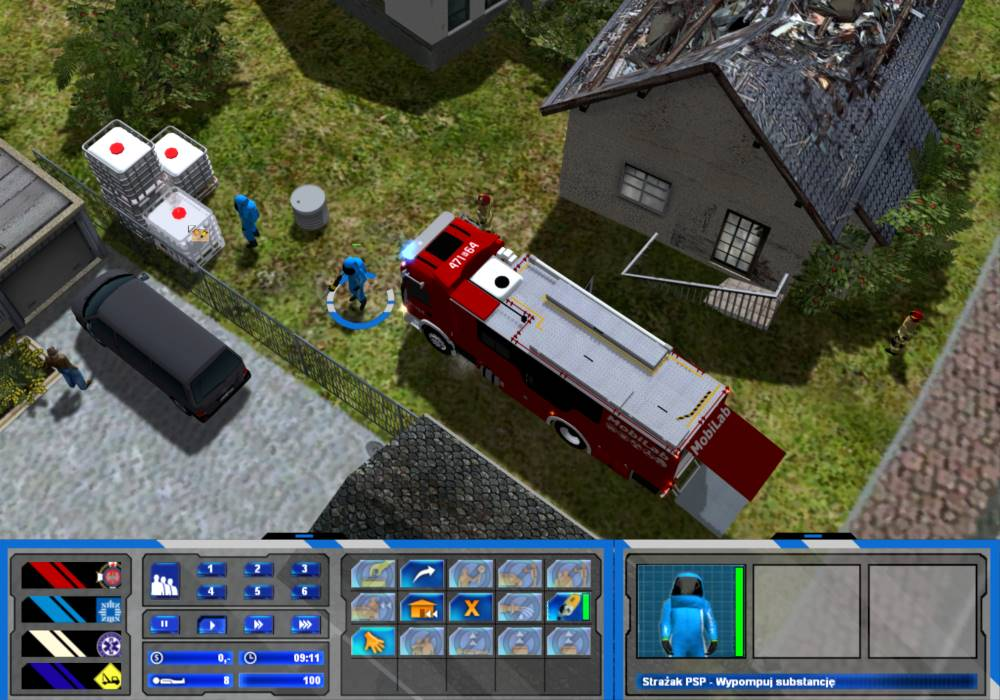
W przypadku plamy oleju należy zneutralizować plamę za pomocą sorbentu i miotły. Następnie należy zabrać zepsuty pojazd za pomocą lawety. W przypadku wycieku z ciężarówki można wypompować paliwo za pomocą zastępu SRChem, a ciężarówkę zabrać zastępem SCRd.
W przypadku zaburzeń psychicznych należy obezwładnić agresywną osobę za pomocą policjanta, a następnie przekazać ją Zespołowi Ratownictwa Medycznego.
Żeby dotrzeć do niektórych poszkodowanych konieczna może być pomoc straży pożarnej, na przykład w celu pocięcia krzaków piłą łańcuchową lub otwarcia drzwi halliganem.
W przypadku poszkodowanego znajdującego się na dachu należy rozstawić podnośnik na budynek, a następnie za pomocą strażaka wejść na dach i ewakuować poszkodowanego na dół.
Jeżeli mamy do czynienia ze zmarłą osobą, powinniśmy wybrać lekarza lub ratownika medycznego i kliknąć na nią. Ciało zostanie okryte czarnym workiem i dzięki temu nie będziemy mieli misji nieudanej. Następnie możemy zabrać ciało za pomocą samochodu firmy pogrzebowej.